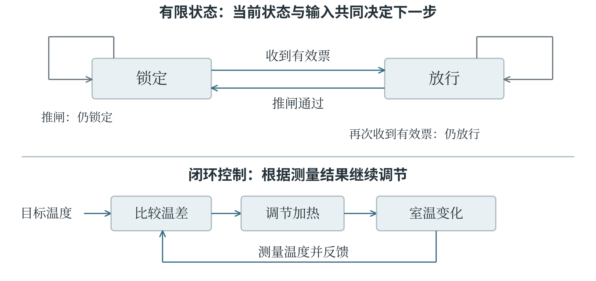
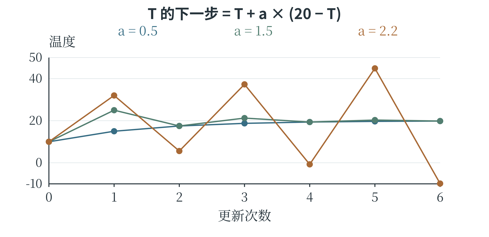

4.5 状态、过程与反馈系统
状态应当保存什么
描述一个正在运行的系统，往往需要知道它“目前处于什么情况”。状态就是为判断下一步变化而保留的信息。自动门可以处于关闭、正在打开、打开、正在关闭等状态；程序处理文本时，可以处于“尚未读到数字”或“正在读取一串数字”的状态。状态名称取决于任务需要，不一定对应一个可见的物体。怎样判断保留的信息是否够用？可以试着用它们推演下一步。例如，只记录机器人所在格子，在所有方向移动规则相同时也许可用；若“前进”的方向取决于机器人朝向，就还应记录朝向。位置相同、朝向不同，执行同一动作后可能到达不同格子。状态需要足以判断下一步的变化；与变化无关的细节，则可以略去。
所有可能状态构成状态空间。动作或输入使系统从一个状态进入另一个状态，称为状态转换。若只用有限个状态及明确的转换规则描述系统，就得到一种有限状态自动机。下面用一个简化闸机说明：状态只有“锁定”和“放行”，输入只有“有效票”和“推闸”。初始为锁定；收到有效票后放行；放行时推闸，通过后重新锁定。此模型只研究通行许可，不描述机械开合所花的时间。
表 4-3 简化闸机的状态转换规则
| 当前状态 | 输入 | 下一状态 |
|---|---|---|
| 锁定 | 有效票 | 放行 |
| 锁定 | 推闸 | 锁定 |
| 放行 | 有效票 | 放行 |
| 放行 | 推闸 | 锁定 |
transition = {
("锁定", "有效票"): "放行",
("锁定", "推闸"): "锁定",
("放行", "有效票"): "放行",
("放行", "推闸"): "锁定"
}
state = "锁定"
for event in ["推闸", "有效票", "推闸"]:
state = transition[(state, event)]
print(state)
三个输出依次为“锁定、放行、锁定”。字典的键是一对信息：当前状态和当前输入，只根据其中一个无法决定下一状态。图 4-7 中，箭头说明转换方向，箭头上的文字说明触发条件；回到自身的箭头表示输入发生后状态不变。运行过程可以写成一串状态，也可以在这张状态图中沿箭头走。

用反馈解释持续变化
若系统的输出结果被测量后又用于决定下一步动作，就形成反馈。温度调节器读取室温，与设定温度比较，再决定是否加热；加热改变室温，新的室温又成为下一次判断的输入。这是一个闭环。若只是每天固定时间打开加热器，期间不测量温度，动作虽然自动执行，却没有依据温度结果形成这一反馈回路。
负反馈使变化受到抵消，常用于减小偏差。室温低于目标就增强加热，接近目标就减弱或停止加热，作用方向是在缩小温度差。正反馈则使原先的变化进一步加强。例如，话筒拾取扬声器的声音，声音被放大后再次送到扬声器，话筒又拾取更强的声音，便可能形成越来越响的啸叫。
“正”和“负”表示作用方向，不等于好和坏。负反馈若调节过猛或反应太迟，也可能使温度上下摆动。
可以先用一个简化计算理解调节强度。设目标温度为 20，当前为 10，每一步将当前温度向目标移动“温差的一定比例”。比例取 0.5 时，温度依次变为 15、17.5、18.75，偏差逐步缩小；比例取 1.5 时，先变为 25，再变为 17.5，虽然越过目标，但摆动幅度逐步减小。比例取 2.2 时，先到 32，再到 5.6，摆动反而扩大。这里假设温度能立即按公式变化，只用于观察调节规则，真实加热系统还包含热损失、延迟等因素。
人工智能系统也有反馈。推荐结果影响人们看见什么，看见什么又影响点击记录，点击记录再用于更新推荐。如果系统只根据已有点击不断增加相似内容，就可能形成偏好被持续放大的回路。模型训练中依据误差调整参数，也是在使用结果改进后续计算。调整能否改善结果，既取决于反馈是否可靠，也取决于调整的方式。
用一条更新规则推演反馈
前面的温度调节可以写成递推关系。递推表示用当前已经知道的量计算下一步的量。设 \(T_t\) 为第 \(t\) 步的温度，目标温度为 20，调节比例为 \(a\)，则下一步为：
下标 \(t+1\) 表示下一步，括号内是当前距离目标的差。取 \(T_0=10\)、\(a=0.5\)，第一次计算 \(10+0.5\times10=15\)，第二次计算 \(15+0.5\times5=17.5\)。每一步都重新用当前温度求差，不能始终把最初的温差 10 加进去。
temperature = 10.0
rate = 0.5
history = [temperature]
for step in range(5):
temperature += rate * (20 - temperature)
history.append(temperature)
print(history)
# [10.0, 15.0, 17.5, 18.75, 19.375, 19.6875]
图 4-8 将三种调节比例的结果画在一起。同样按温差调整，幅度不同，过程便不同；第六章还会用这种逐步推演的方法观察参数训练。
